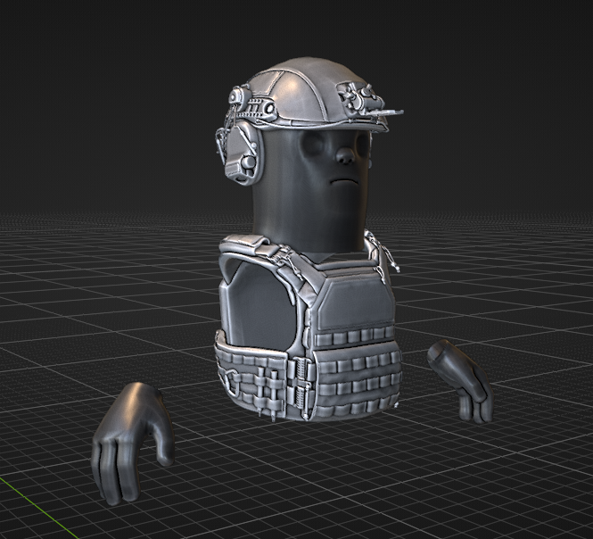
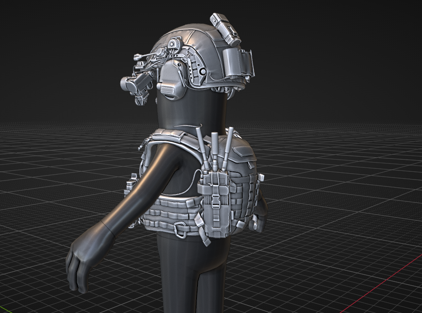
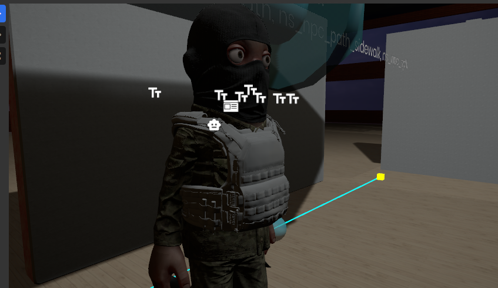
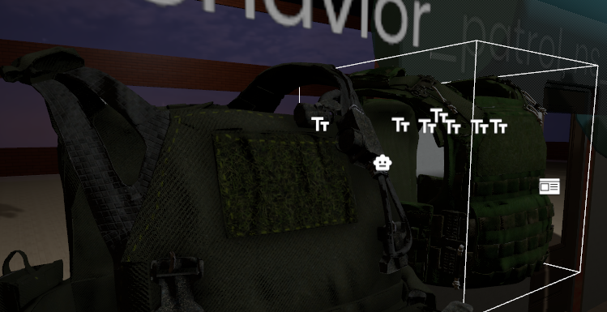
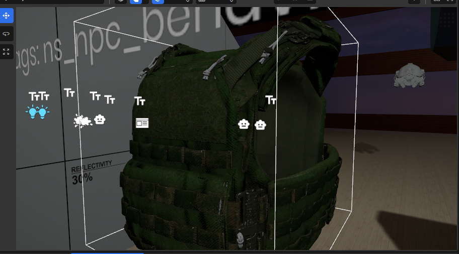
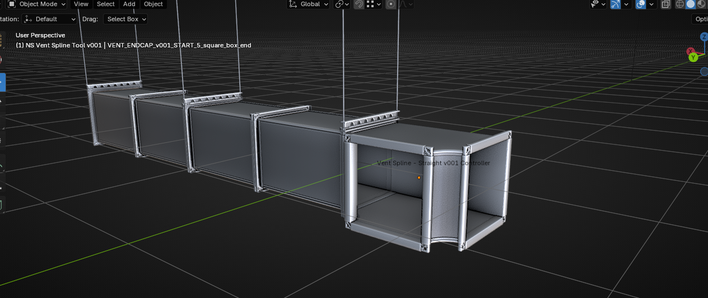

Pushing toward the MVP
This was one of those weeks where AfterDark moved on several fronts at once.
The visible part is the new tactical gear material work. I have been playing with the vest and helmet materials directly in s&box, trying to get the gear to feel less like a raw import and more like something that belongs on a character in the city. The first paint pass on the vest is still the one I like best right now: more washed out, less plastic, and with better velcro read than the darker green pass.
The bigger production story is the MVP push underneath it. Recent work has been going into UI polish, extending the already-working police and crime loop into more NPC-side arrest and release handling, tactical wall cleanup, stronger VFX, and a major performance recovery pass. None of those are isolated features anymore. They are all part of getting the city to behave like one connected system.
That is the good news: the full city system is working at this point. Now the work becomes scaling it up.





Tactical gear is becoming usable in-game
The gear pass is not just a screenshot exercise.
The latest commit stack brought in the first real tactical gear pass: helmet work, two vest variants, rigged vest assets, clothing definitions, and the material textures needed to start testing the pieces on characters instead of treating them as standalone props. The work is still early, but it already shows the difference between having an asset imported and having an asset that can be judged in the game.
That distinction matters for AfterDark. Character gear has to survive:
- scene lighting,
- third-person distance,
- close inspection,
- character movement,
- job identity,
- and the messy overlap of UI markers, weapons, pouches, radios, helmets, and clothing.
The current vest material is not final, but it is pointing in a better direction. The washed-out pass gives the surface more air. The velcro panels read more clearly. The straps and pouch structure hold together better. The darker green pass is useful, but it starts collapsing the gear into one dark shape in the current lighting.
That is exactly why material tests need to happen in s&box, not only in a clean DCC preview.
UI polish and the player-facing surface
The MVP push also put more attention into the player-facing UI.
Recent work touched the root panel, job portrait panel, spawn menu cursor handling, player menu mode, prop pages, health tracker behavior, and other smaller pieces of the interface layer. The goal is not just to make the UI nicer. The goal is to make the city easier to operate while more systems are running at the same time.
That matters because AfterDark is getting dense enough that rough UI starts costing real testing time. Police status, job identity, prop access, health feedback, world panels, focused interaction, and admin/dev surfaces all need to stop fighting for attention.
The UI does not need to become loud. It needs to become clearer.
Police, crime, NPC arrest, and release
The police and crime loop was already in place. This pass pushed that foundation further into NPC behavior.
The recent MVP work extended the existing law/crime setup through detain and escort utilities, handcuffs, criminal NPC behavior, NPC detain transport, tazer handling, player status, respawn, release-adjacent flow, and better visual feedback. That is important because the police layer is one of the systems that turns the city from a static map into a pressure system.
The target is not just "police can chase someone." The target is a balanced conflict between cops and criminals where both sides have room to play. Cops should not have a one-shot tazer that turns every encounter into a rush to see who fires first. The stun needs to be earned through buildup, pressure, positioning, and repeated contact so the arrest side feels closer to combat than a single-button shutdown.
That means the loop needs enough structure to support:
- crimes that are noticed,
- NPC and police response,
- detain and escort behavior,
- tazer pressure that builds toward a stun instead of instantly deciding the fight,
- custody and release handling,
- wanted-state pressure,
- and enough player feedback that the whole thing feels readable instead of arbitrary.
This is still not finished, but the shape is getting much more complete. The city can now carry more of the law/crime layer into NPC behavior without needing every test to be staged manually.
Performance got a real recovery pass
The less glamorous headline is performance, but it is probably the most important one.
A recent optimization pass reclaimed roughly 100-120 FPS in the current dev environment. That is good progress, but it came with cutbacks, and it is not the final answer. The build still needs a more durable optimization path as the city grows.
The current recovery work touched performance diagnostics, model culling, local first-person body culling, NPC visual LOD, NPC scene query caching, overhead text budgeting, world panel culling, pickup visuals, point light budgeting, prop/toolgun policies, traffic spawn behavior, time updates, and several HUD/debug surfaces.
That sounds broad because it had to be broad. The city is no longer a small feature slice. It is a full system stack: NPCs, traffic, props, walls, UI, interactables, materials, lights, jobs, police, economy, and debug tooling all running together.
The next performance step needs to be cleaner. Props and scripts still need deeper optimization so the reclaimed frame rate comes from better scaling, not only from cutting things back.
The city system is online
The encouraging part is that the city now works as a city.
That does not mean every system is finished. It means the major layers are finally overlapping in one playable space: city simulation, UI, jobs, gear, police pressure, NPC handling, tactical walls, props, and performance tooling. That is the stage where AfterDark can stop proving each idea in isolation and start scaling the parts that already work.
That city layer also includes more of the traversal and authoring work now. The vent side is part of the current city read, and the spline tools got another pass so repeated city pieces are easier to place and reason about. One important cleanup: the train tool no longer duplicates supports incorrectly, which makes the rail pass less noisy and much safer to keep building on.

There is still a lot to polish:
- tactical gear materials need another pass,
- props need better budgets and cleanup,
- scripts need continued profiling,
- vent and spline-authored traversal pieces need more playtest cleanup,
- police/crime needs more real playtesting,
- NPC arrest and release flow needs more tuning,
- UI needs to keep getting quieter and more direct,
- and the city needs to grow without giving back the frame rate that was just recovered.
But this is a good place to be. The full city system is alive. Now the work is making it bigger, cleaner, faster, and more readable.
Signed, Nightshift